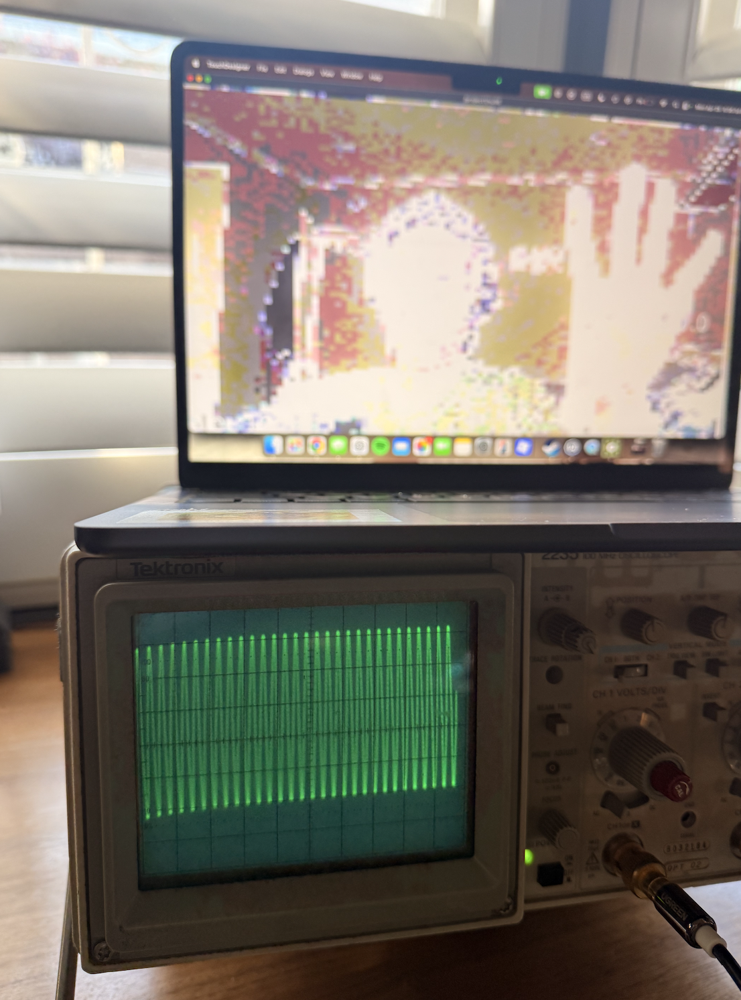
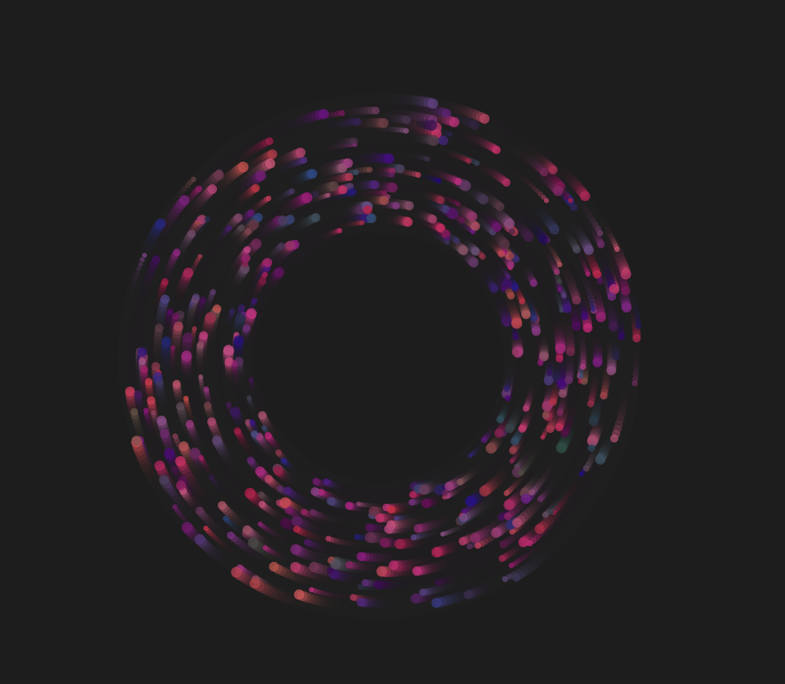

        <div class="artpiece">
            <a href="https://editor.p5js.org/coolkieran99/sketches/FB5_wjMxr" target="_blank">
                
            </a>
            <div class="name">Kieran Fennell-Molinaro</div>
            <span class="title">Electric Shock</span>
            <span class="language">JavaScript
                <a class="source-link" href="https://editor.p5js.org/coolkieran99/sketches/FB5_wjMxr" target="_blank">(source)</a>
            </span>
        </div>
        

        <div class="artpiece">
            
            <div class="name">Ellis Kopcho</div>
            <span class="title">change</span>
            <span class="language">JavaScript
                
            </span>
        </div>
        

        <div class="artpiece">
            <a href="https://editor.p5js.org/AgentRelish/sketches/x0kzOGDfQ" target="_blank">
                
            </a>
            <div class="name">Orion Thomas</div>
            <span class="title">"We have MS Paint at home: MS Paint at home"</span>
            <span class="language">JavaScript
                <a class="source-link" href="https://editor.p5js.org/AgentRelish/sketches/x0kzOGDfQ" target="_blank">(source)</a>
            </span>
        </div>
        

        <div class="artpiece">
            <a href="https://editor.p5js.org/jack23t5923t1t115815/sketches/Pxsp_ydmx" target="_blank">
                
            </a>
            <div class="name">Jack Tibbitt</div>
            <span class="title">Particles</span>
            <span class="language">JavaScript
                <a class="source-link" href="https://editor.p5js.org/jack23t5923t1t115815/sketches/Pxsp_ydmx" target="_blank">(source)</a>
            </span>
        </div>
        